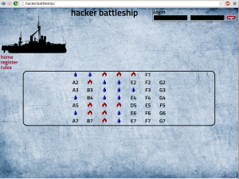

Hacker Battleship is our take on capture-the-flag style hacking competitions. Individuals and teams will complete various challenges in an attempt to discover the battleships on the game board. We’ve redesigned everything from the ground up this year, so we’ll have a new look, and new challenges!
Rules
The rules are pretty simple:
- Teams register for the competition (teams of 1 to 5 are permitted).
- “The House” has a 7×7 battleship grid laid out
- Each coordinate on the grid is tied to a hacking challenge of some kind.
- All of the teams work to sink all of The House’s ships.
- When a challenge is solved, the corresponding coordinate is revealed as either a hit or a miss.
- Points are awarded for
- solving a challenge
- hitting a ship
- sinking a ship
- At the end of the competition, the team with the most points wins the game, and the awesome gear listed below.
We’re pretty excited about this game. To our knowledge it’s unique among the CTF challenges out there.
Updates For 2016
We’ve heard that you want some new and tougher challenges; this year’s Hacker Battleship CTF is stepping things up a couple of notches. Come prepared and bring your A-Game if you want to win!
Challenges will cover a variety of topics, including:Web
- Networking
- Reverse Engineering
- Shell games and application exploitation
- Embedded Systems
- Software-Defined Radio
- Cryptography
- Steganography
The challenges will generally be grouped together based upon a common theme. If you’re struggling with a challenge, try a neighboring tile; you may find that it’s an easier variant of the same topic. Conversely, if you’re struggling with a particular topic, try a different area of the board.
Below are some recommended items that you bring in your bag of tricks:
- General: Your favorite programming or scripting language. Many levels will require you to write a little code.
- Networking: You never leave home without NMap and Wireshark anyway, so we don’t even have to mention it, right?
- Reverse Engineering: Perhaps IDA (Pro or Freeware) and a Java Decompiler would be handy to have on hand?
- Exploitation: Identify design and implementation flaws and bend machines to your every whim.
- Embedded Systems: So you want to look at some signal captures? GTKwave and Logic might be good to familiarize yourself with…
- SDR Challenges: An RTL-SDR should be sufficient. However, you could visit Nuand, one of our sponsors, to learn about their SDR offering, and maybe even get some hints! Check out the GNU Radio Live Environment, as it contains a ton of useful tools, such as Gqrx.
- Steganography: GIMP and Audacity will definitely be helpful.
Prizes
We’re happy to announce a very exciting prize pack for this year’s CTF winners. Many, many, thanks go out to the companies whose generous donations made this awesome prize pack possible! Be sure to check out more info about these in-kind sponsors on our sponsors page.
- The Pwn Plug R3 penetration testing platform, thanks to the fantastic Pwnie Express team. The Pwn Plug R3 is a portable pentesting platform with over 100 of your favorite OSS tools pre-installed, onboard bluetooth support, and onboard high-gain 802.11a/b/g/n/ac support (with packet injection and monitor mode). And that’s just a few of its features!
- A USB Armory, has been generously donated by its creators, Inverse Path. The USB Armory is an open source flash drive-sized computer packed with a number of security features, empowering developers to create a trusted USB device and innovate a wide variety of personal security applications.
- Two CrazyRadio PAs have been donated by the team at Bitcraze. The CrazyRadio PA is a long-range USB radio dongle based on the Nordic Semiconductor nRF24LU1+ and is equipped with a 20 dBm power amplifier. Use it to control your CrazyFlie or favorite gadget of choice! (Or someone else’s computer, apparently!)
- The cool folks from Hak5 have kindly provided a slew of goodies that you’ve probably seen in their shop or on their videos, including: